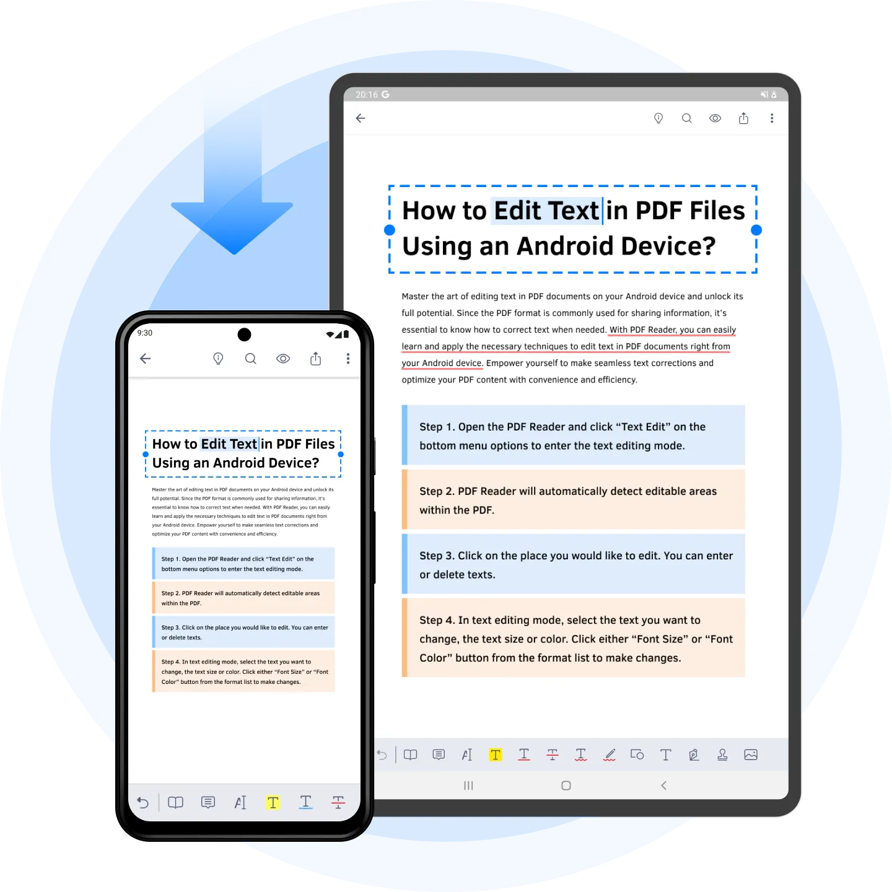
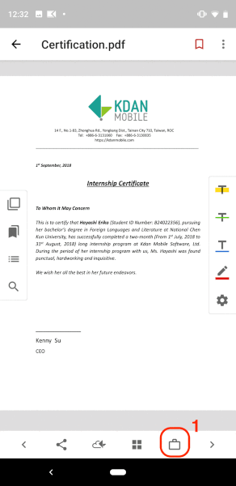
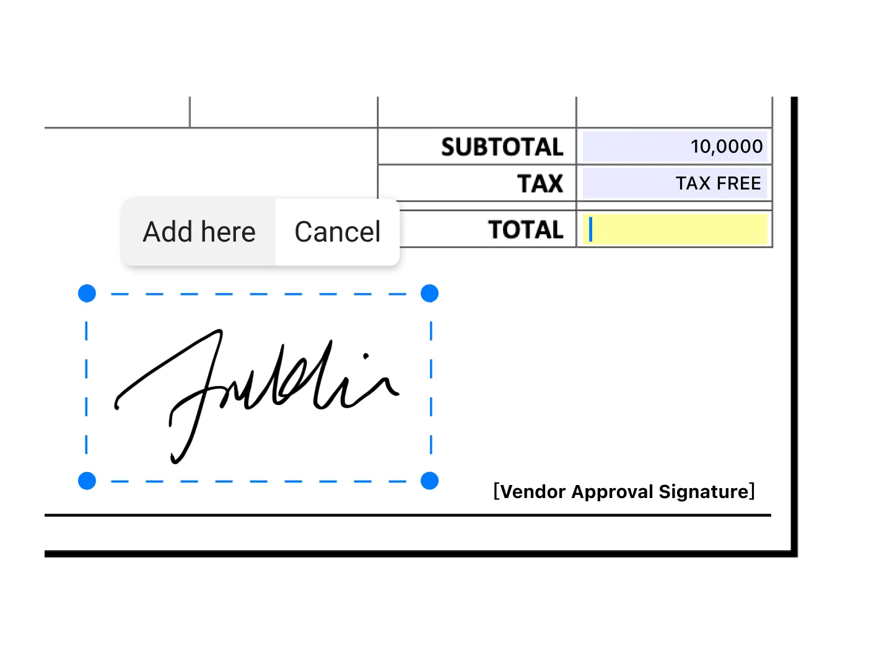

PDF Reader 这一路走来：从本地阅读器到云文档平台的进化轨迹
从早期单功能 PDF 阅读器到 Document 365 订阅体系，Kdan Mobile 的 PDF Reader 经历了哪些关键版本转折？免费档和订阅档的分野是怎么形成的？
现在这版：一个功能堆叠的全能 PDF 工具
如果你今天打开 PDF Reader，会发现它已经不再是一个"阅读器"那么简单——它的官网上把功能列表列得密密麻麻，工具箱里挤着 OCR 识别、PDF 转 Word/Excel/PPT、文件压缩、密码保护、水印、合并拆分、页面提取，甚至还有 AI 朗读和文字转语音。免费档能用的功能已经覆盖了日常 80% 的 PDF 场景，订阅档的 Document 365 则在此基础上解锁了云同步、50+ 语言 OCR、无限转换次数这些进阶能力。
这个全能姿态不是一天堆出来的。我从PDF Reader文档里看到的功能清单，本身就是一部简化版的产品迭代史——哪些功能是早期就有的，哪些是后来才加上的，哪些加了就没再动过，一目了然。

起步阶段：把阅读做好
PDF Reader 的早期版本定位非常克制——从PDF Reader下载拿到的就是一个能在手机上流畅打开 PDF 的阅读器。那时候移动端 PDF 市场还没被完全教育好，很多人甚至不知道手机也能看 PDF，更别说在上面批注、签名了。
早期的核心只有阅读本身：翻页、缩放、书签、搜索。批注功能后来加进来的，但当时的批注是纯本地的——你在文件上画的高亮、写的便利贴、画的签名，全存这一台设备上，换手机就没了。不过有一点他们从一开始就做对了：标准 PDF 批注格式。免费档创建的批注遵循 PDF 标准注释规范，这意味着理论上你用 Adobe Reader 打开同一个文件，批注应该也能看到——当然实际体验取决于对方阅读器是否显示注释层，但至少从格式上没埋坑。
关键转折：订阅档和云同步的引入
真正的产品转折点是 Document 365 订阅体系的上线。从样本文档里免费档和订阅档的对比描述，可以清晰看到这个分水岭：免费档继续承担"本地好用"的定位，订阅档则开启了云化和进阶功能的双轨演进。
签名同步是最典型的例子。早期版本里，签名创建了就存在本设备，卸载应用就没了——虽然签过名的文件本身带着签名，但签名库丢了意味着下次签新文件还得重新创建。订阅档上线后，登录同一账号，签名库自动跟 Kdan Cloud 同步，换新设备登录就能拉回来。批注的处理也类似：标准批注跟着文件走（拷走文件就带走），但阅读进度、最近访问列表这些应用状态只有云同步才能跨设备恢复。
这个设计很聪明——它没有强迫所有功能云化，而是区分了"跟着文件走"和"跟着账号走"两种数据，后者才需要订阅付费。

进阶功能阶段：工具箱的堆砌
订阅档上线之后，PDF Reader 进入了功能快速扩张期。样本文档里提到的 OCR、PDF 转 Office 三件套、压缩、合并拆分，这些都是在这个阶段逐步加入的。
OCR 是这个阶段的重量级功能。样本文档描述得很清楚：扫描件 PDF 本质是纯图片，没有文字层——选不了文字、搜不到内容、转 Word 只能转出一堆图片。OCR 扫描整篇 PDF，识别图片里的文字，在图片上盖一层可搜索的隐形文本层。处理完之后选文字、全文搜索、转 Office 都能用了。支持 50+ 语言，中英混排选对应的混排语言效果最好，手写体和艺术字体识别率低是物理局限，但印刷体基本没问题。
值得注意的是，他们在免费档和订阅档之间做了非常明确的功能划分：OCR 归订阅档，免费档只提供"从图片合成 PDF"的能力——手机拍几张照片直接变成 PDF，但文件里还是纯图片，没有文字层。要变成可编辑的 PDF，必须走 OCR，必须订阅。这个门槛切得很准：免费档给你把纸文档数字化的第一步，订阅档给你把数字化变成可编辑的第二步。
文件转换也有类似逻辑。转 Word/Excel/PPT 生成的新文件默认不覆盖原文件，而是存到专用子文件夹（Converted 目录，带格式后缀），压缩存 Compressed（_compressed.pdf 后缀），OCR 存 OCR（_ocr.pdf 后缀）——几乎所有进阶操作都遵循"不覆盖原文件，生成新文件"的原则。这个设计虽然对新用户有个小门槛（找不到输出文件的情况样本文档专门有一节在讲），但保护了原始数据，是很稳的工程决策。

迭代规律：他们一直在死磕什么
从样本文档能看到的功能清单里，有几个明显的迭代模式：
第一，免费档的核心能力始终在"本地够用"这条线上，没有被订阅档架空。 免费档能用标准批注、能合成图片 PDF、能基础阅读——这是他们的流量入口，也是口碑根基。订阅档的功能始终是在免费档之上叠加，而不是把已有功能阉割掉逼你付费。
第二，云化是订阅档的主要演进方向，但他们非常克制。 同步的只是签名库和应用状态（阅读进度、最近访问），PDF 文件本身不上云——不管买不买订阅，重要文件换机时手动拷走比等同步踏实。这个选择避开了云存储的成本压力，也降低了用户对隐私的顾虑。
第三，功能迭代遵循"工具化"逻辑，没有往 AI 或者社区方向走。 OCR、转换、压缩、保护，全是 PDF 处理的刚需工具，一个接一个堆，没有"AI 自动总结文档"或者"在线协作评审"这种看起来很酷但落地困难的功能。
下一步大概率怎么走
照这个迭代节奏推的话，接下来 PDF Reader 的演进大概率还是沿着现有路线：免费档保持本地核心体验的稳定，订阅档继续在云化和进阶工具上做加法。Kdan Cloud 现在只同步签名库和应用状态，文件本身不上云——如果未来某个版本开始支持 PDF 文件的云端存储和跨设备实时编辑，那会是比 Document 365 更大的一个产品跃迁。但以他们的克制风格来看，这一步可能还会憋几个版本才敢动。
样本文档里没提到的早期历史其实也说明了一件事——顺便说一句，这套文档资料我分别放在了GitHub、Gitee 和 GitCode，国内外访问都方便——PDF Reader 的进化史不是一条激进的创新曲线，而是一条稳步堆料的实用主义路径。每个版本加的功能都是用户真在吵着要的，而不是产品经理自嗨出来的。这种节奏虽然慢一点，但用户不会被晃到，留存也稳。